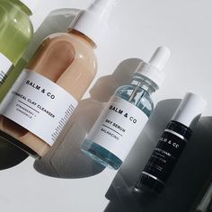
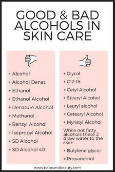

Skincare
Skincare routines
Skincare is iets wat iedereen hoort te doen. Een gezonde huis is een blije huid wat lijdt tot een mooie huid. Het maakt niet uit of je jong/oud of een meisje/jongen bent. Het maakt ok niet uit of je nou wel of geen make up draagt. Iedereen en dan bedoel ik ook IEDEREEN moet zich bezig houden met de gezondheid van zijn of haar huid. Vroeger smeerde ik zelf een heleboel make-up op mijn gezicht zonder dat op schoon t maken. Dit is niet alleen ranzig, maar is het ook alsof je het universum vraagt om puistjes.
Natuurlijk heeft iedereen dagen waarop hij of zij geen zin heeft om zijn of haar gezicht te wassen, maar het is goed als je zovaak als mogelijk je gezicht wast, Je moet het zien als het poetsen van je tanden. Als je 3 dagen je tanden poetst worden ze geel, vies en gaan je stinken uit je mond. Dit gebreurt ook op je gezicht alleen het stinken gedeelte dan weer niet.
Er is wel een klein dingetje: Iedereen heeft een ander huidtype. Iedere huis is anders en heeft dus andere verzorging nodig. Daarom heb ik hieronder 6 verschillende skincare routines voor 6 verschillende huidtypen neergezet.
Let op!
Niet alle Alcohol in producten zijn goed. Zie hieronder wel goed zijn en welke niet.

| Normal Skin | |
|---|---|
| Am |
Cleanser
Toner Moisturizer met SPF |
| Pm | Cleanser
Toner Antioxidant serum Moisturizer |
| Extras | Glycolic acid serum |
| Oily Skin | |
|---|---|
| Am |
Cleansing gel
Toner Antioxidant serum Zinc oxide zonnebrand |
| Pm | Cleansing gel
Toner AHA/BHA serum Retinol serum Olie vrije moisturizer |
| Extras | Klei masker
Gezicht olie |
| Dry Skin | |
|---|---|
| Am |
Clensing lotion
Toner Antioxidant serum Moisturizer met SPF |
| Pm |
Clensing lotion
Toner renitol serum Eye cream Hydraterende moisturizer |
| Extras | Peel Masker
Gezicht olie |
| Combination Skin | |
|---|---|
| Am |
Cleansing gel
Toner Lightweight moisturizer Zinc oxide zonnebrand |
| Pm | Cleansing gel
Toner AHA/BHA serum Retinol serum Lightweight moisturizer |
| Extras | Klei masker
Gezicht olie |
| Aging skin | |
|---|---|
| Am |
Cleansing lotion
Alcohol-free toner Antioxidant serum Moisturizer met SPF |
| Pm | Cleansing lotion
Fysieke exfoliator toner Renitol serum Oog creme Hydraterende Moisturizer |
| Extras | At home peel
Brightening serum Gezicht olie |
| Sensitive Skin | |
|---|---|
| Am |
Cleansing lotion
Alcohol-free toner Moisturizer zonder geur Zinc oxide zonnebrand |
| Pm | Cleansing lotion
Alcohol-free toner Moisturizer zonder geur |
| Extras | Gel masker
Lactic acid serum |
hello
.